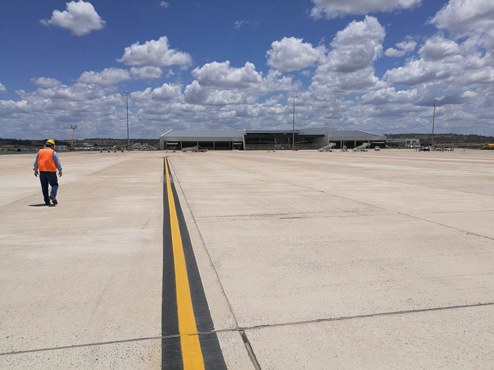

18/10/20 | Word Count: 918
When you look around a modern city today, beneath the slick glass facades lies a material that dates back to ancient Rome. The versatility and availability of concrete has led it to be one of the most consumed materials around the world. In 2014, it was found to be the 2nd most consumed material, only beaten by water. This had been the trend for some decades, only levelling off in recent years with China producing more cement than the rest of the world combined. The second and third largest producers were India and USA respectively, lagging someway behind.
Global production of cement in millions of tonnes, split between the 3 largest producers and the Rest of the World (RoW)
Source: USGS
Concrete is made up of many components, with cement acting as the binder that holds everything together. Typically cement makes up 8-15% of concrete by volume depending on the strength required. However, the majority of greenhouse gas emissions come from the production of cement, which is why it usually ends up being the focus of conversations around the sustainability of concrete.
Close to 75% of the carbon footprint of concrete is from the cement production. Part of this is due to the energy sources used in the process predominantly being fossil fuel based, however a large portion is also released chemically during the production of clinker, a precursor to cement. Various clays and limestones are baked at high temperatures (1450oC) and ground to form a fine powder and combined with other mineral components. Furthermore, the calcium carbonate within the limestone reacts during the baking and forms carbon dioxide.
Breakdown of the GHG emissions (in %) from the production of cement where chemical emissions are those from the reaction of
calcium carbonate, thermal emissions are from the fossil fuels needed to heat the kiln, and the remaining encapsulate all other emissions
from the production process
Source: Chatham House
Combining the huge production quantities of cement with its moderate carbon footprint, results in an industry that is responsible for 8% of global greenhouse gas emissions.
Source: Nikkei Asia
2000 years ago, the Romans created a concrete, using chemically similar ingredients to
construct the Pantheon and the Colosseum. Whilst the concrete itself may be weaker than modern
day mixes, these structures that still stand today and will continue to in the future thanks
to the durability
of the mix the Romans had used.
The increasing demand of concrete is by no accident, as the function it
fulfils can be seldom replaced by other materials. Some of the largest
concrete structures such as the Three Gorges Dam (pictured above) or the Hoover
Dam would not be possible using other materials. There is even speculation that the
concrete within the Hoover Dam is still setting
, some 90 years after its initial
construction, a testament to the pure mass of material used, and the research and
development required to realise the structure.
Within our cities too, concrete is used everywhere from infrastructure projects,
structures that sit above ground and the foundations that lay below.
Beyond the
cost effectiveness
and availability, it also imparts increased thermal mass
to a building, allowing it to normalise diurnal temperature variations and
lower the energy
demand of buildings to regulate internal temperature.
Fast forward to today, and concrete is being reinvigorated with modern technology;
houses (below) are being printed to benefit
from unique builds-ups and reduced wastage.
Other mixes incorporate passive agents such as
titanium dioxide
that limit the build-up of dirt and mould,
reducing the required maintenance to keep the surface clean.
Source: 3D Printed House
Concrete has found itself to be a cornerstone of modern urbanised areas and doesn’t seem to be going anywhere anytime soon. However, with imposing decarbonisation goals to reduce anthropogenic emissions, this multi-billion-pound industry is facing scrutiny as to how it will adapt.
The environmental impact of concrete is no secret to the construction industry,
and there have been many technological developments to address this issue. As expected,
they generally focus on reducing the cement component in concrete mixes.
One method utilises by-products from other industries, which can be used to reduce
the cement content. Iron is typically produced through a blast furnace, a large kiln
that heats the ore and other ingredients. As part of this process, a slag is
produced which is filtered off and generally considered a waste product. If this
slag is allowed to harden, and ground, it has a chemical consistency which
works well as a supplement to cement, and is known as ground granulated blast furnace
slag (GGBS). Similarly, fly ash is collected from the flues at coal plants, which
can then be ground into a powder to supplement cement, known as pulverised
fly ash
(PFA). As both these substances are readily being produced in existing systems, they are
considered to have an extremely low carbon footprint. There are also codified
grades
which take into account these cement replacements making it extremely accessible to specify
and use. However, the replacement alters the consistency of the final concrete, and as
such there are limits to how much cement they can replace. Furthermore, both substances
are derived from industries that will likely shift away from their established processes.
As such there is now a rise of more innovative solutions that look to push what is possible.
Geopolymer
concrete aims to replace the cement component entirely with an alternate binder
with much smaller GHG emissions.
 Geopolymer floor for the turning node at Brisbane West Wellcamp airport
Source: BFT International
Solidiatech takes it a step further and use carbon
dioxide in the setting process to sequester
carbon during the curing process. Whilst this process still uses cement, it can find use
for carbon dioxide captured through other processes.
These are just some of the technologies that are being researched.
However, questions are still raised as to whether incremental changes are enough, and how soon
these technologies can be implemented. Whilst concrete will still be used through our urban
environment, there is still some hope that it will be able to clean itself up and start to
cut down on its GHG emissions.
For more information on this topic, the Guardian
has a great write up on the state of concrete
from a year ago as part of their Concrete Week investigation.